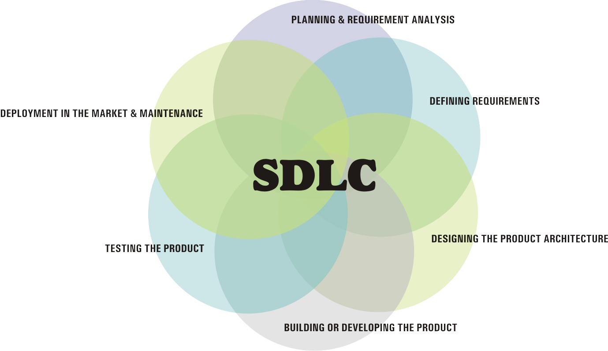

Projects
Predicting Bird Sighting - (Map Reduce, Hadoop, Weka, Java)
Implemented a distributed parallel algorithm to predict the presence of the Red-winged Blackbird in each birding session as accurately as possible,
using the Hadoop framework with Weka library for data mining.
Accuracy: Random Forests : 83%, LogitBoost : 76%
Spam Detection (Elastic Search, JAVA)
Designed an application to extract spam words from a data set of 75419 documents.
Achieved an accuracy of 99.67% by using all the unigrams as features.
Extracted the top spam words using the trained algorithm.
Machine Learning for IR - Linear Regression (LIBLINEAR , JAVA)
Restricted the data to documents present in the QREL
Split the queries randomly into 20 “training” queries and 5 “testing” queries.
Built a query-doc static feature matrix in the format required by LibLinear.
Trained a learning algorithm using the “train” queries static matrix to create a model relating labels to the features using LibLinear.
TESTING THE MODEL:
For each of the 5 testing queries implemented the following:
Ran the model to obtain scores.
Treated the scores as coming from an IR function, and ranked the documents
Formatted the results and ran TRECEVAL, reporting the evaluation as “testingperformance”.
TREC Evaluation Program (Elastic Search, JAVA, Calaca)
Designed application like TREC EVAL: to evaluate results, displaying the accuracy of search engine.
Computed R-precision, Average Precision, nDCG, precision@k and recall@k and F1@k (k=5, 10, 20, 50, 100)
for every query to check the effectiveness of the retrieval. Created precision-recall plot.
Search Engine (Elastic Search, JAVA)
Implemented a focused Web Crawler. Crawled 20,000 unique documents individually, including the seed URLs. Merge the individual crawled documents with team-mates who had to crawl the same topic using Elastic Search and create a vertical search engine. Used Calaca as a web interface to query the merged index.
File Based Indexer (JAVA)
Implemented an inverted index to simulate the function of Elastic Search on a corpus consisting of 86000 documents.
Used efficient memory management and never loaded more than 1000 documents into memory at a given time
Implemented all the vector space models and language models and obtained the same results as when Elastic Search was used to index the documents.
Information Retrieval Models Using Elastic Search (JAVA)
Parsed a corpus consisting of 86000 documents and indexed them using Elastic Search.
Implemented and compared various retrieval systems using vector space models and language models such as:
• Okapi TF
• BM25
• TF-IDF
• Laplace Smoothing
• Laplace Jelinek
• Proximity Search
Evaluated the results of each retrieval model using TREC_EVAL.
Just In Time - Event Scheduler (MEAN Stack)
Project Proposal
Designed and developed a web application to schedule events using MEAN(MongoDB, Express, AngularJS, NodeJS) stack.
Used HTML5, CSS3 and Bootstrap for the front end design.
Implemented Nodemailer to send e-mails from the web application.
Single page, responsive web application.
Courses
- 
-